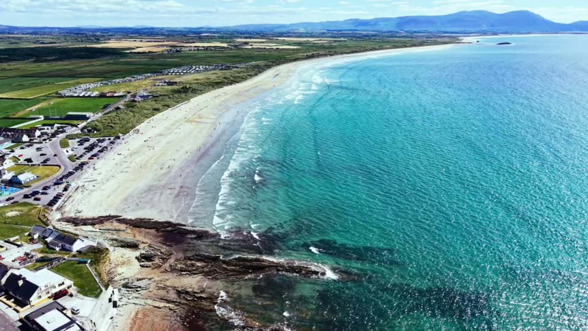

Things to do
Ten local favourites, picked by the people who live here.
Ten reasons to stay longer
Whether you're here for an afternoon or a week, start with these. Have a favourite we've missed? Tell us on Instagram.
Ballyheigue Beach
Three kilometres of golden Blue Flag sand backed by dunes, looking out over Tralee Bay. Swim, surf, kayak or fish from the shore, and look out for lifeguards in the bathing season. There's parking beside the beach and a playground across the road.
The Black Rock
The local landmark at the end of the classic beach walk, and one of the best spots to watch the Atlantic waves roll in.
Kerry Head coastal drive
A loop around the peninsula with ocean views at every bend, across to Banna Strand, Tralee Bay and the Dingle mountains. Drive it, cycle it or walk sections of it.
Ballyheigue Castle
The striking ruin of the Crosbie family's mansion, standing above the village and the golf course. A fine backdrop for photos.
Roger Casement monument
A monument overlooking the Atlantic, commemorating one of the significant figures of Irish history.
Seaside sauna
Warm up after a sea swim with a sauna session overlooking the beach. Heat, a cold plunge in the Atlantic, repeat.
Ballyheigue Castle Golf Club
Nine holes laid out around the 18th-century castle, with views over the beach to the Brandon mountains. Visitors welcome.
The local pubs
A warm welcome, a good pint and trad sessions in high season. After a day on the beach, there's nowhere better.
Ballyheigue Amusements
A nostalgic seaside favourite that's been part of summer holidays here for generations. A good one for rainy days.
Kerry Head walking trails
Dramatic cliffs, quiet country lanes and the Cahercarbery forts, thought to be over 2,000 years old. Ballyheigue is also the finishing point of the 48km North Kerry Way from Tralee.
Rainy day?
It's Kerry. Have a plan B.
Head for the amusements, warm up in the sauna, settle into a pub or drive 20 minutes to Tralee for the Kerry County Museum and the leisure centres. Banna Leisure Centre, a couple of miles down the road, has an indoor pool.
What's on
Summer is festival season.
July brings the Ballyheigue Summer Festival and Races. In late summer the village fills for the Pattern, a three-day festival with deep local roots. Follow @discoverballyheigue for dates.
Fishing
Bass, flounder and turbot from the beach.
The rocks on Kerry Head give pollock, mackerel and wrasse, but take real care there. Sea angling charters run from Fenit Marina, 10km across the bay.